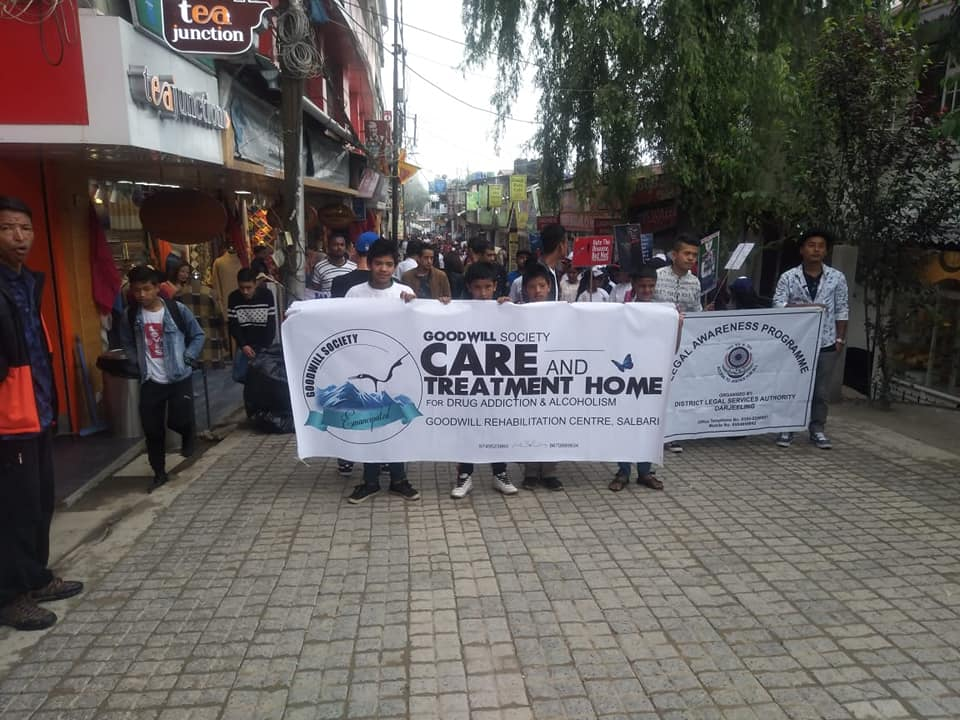

New
About Us
Goodwill Rehabilitation Centre (GRC) was established in the year 2008 and is located at Salbari Siliguri.
Learn more about usOur Vision
To Bring healing and restoration to those persons and their families who have been affected by Drug Addiction and Alcoholism and spread the message of hope, recovery and goodwill in our community.
This is our visionTreatment Structure
Our own experience tells that Drug Addiction and (United Nations ICD F:19 American Medical Association) is a complex issue and affects us in all areas of our lives.
Check how we treat addictionActivities
Through such experiences in dealing with scores of affected persons, whe have learnt that Sports, Art, Music, Gardening and other Outdoor activities can be helpful in achieving soundness of mind, body and spirit, resulting in wholesome recovery.
Check out the activitiesSustainable Skill
One of the reasons for the relapse is a sense of having no purpose or productivity
Learn how we help teach sustainable skills
For Family
We know from our life experiences the family members of Drug Addict or an Alcoholic also suffers and goes through so much of pain
Learn how we provide support their familiesOur Routine
We are a Non-Profit Organization and we stand by it, and because we understand the pain and hardship already faced by the family, we have kept our fee structure to a bare minimum.
Learn about our daily routineOnline Test
Take our free online test to asses your situationa dn get an idea if you are on a risk to develop any degree of addiction or not.
Take the Test.< Back

Goodwill Rehabilitation Centre (GRC) was established in the year 2008 and is located at Salbari Siliguri. We at the Goodwill Rehabilitation Centre have a team of trained and experienced counselors and staff who have had personal experiences of the pain and devastation caused by drug addiction and alcoholism, having gone through the Drug or Alcohol rehabilitation process Ourselves with the support of our families, we are now living a drug and alcohol free life, and have educated our lives to reach out to those persons and families who are suffering in quiet desperation.
We are also supported by medical expertise with a doctor on call and a hospital Nearby in case of any medical needs. We all at the goodwill family believe in serving our society by reaching out and extending our Wands of goodwill to fight against drug addiction and alcoholism.
< Back
To Bring healing and restoration to those persons and their families who have been affected by Drug Addiction and Alcoholism and spread the message of hope, recovery and goodwill in our community, provide treatment and after care solutions that would best serve the individuals to lead a healthy, responsible, productive and drug and alcohol free lives. To provide continuity to address the complex issues of drug Addiction & Alcoholism and its related problems through Research and Development. To provide skill development opportunities, to help individuals to be self-sustaining and help Individuals lead productive and responsible lives after Rehabilitation.
“It is said that everything happens for a reason". And true to this adage, The Goodwill Society has reasons for its existence. Therefore, we have humbly dedicated ourselves to help people and their family affected by Drug Addiction or Alcoholism because we understand the pain, the hopelessness, the shame, the tears and the desperation. We have lived through it and with much to our regret our family members during these years have been forced go through it as well. Today, by entirely God's Grace, we are living a Drug and Alcohol free lives and our families can smile. Out of our brokenness we humbly strive to serve, we reach out in the hope that no Individual along with their family should go through this painful and terrible sadness.
If you can relate to what we are saying, do not worry, there is hope! We are here to walk with you, We shall gladly share your heavy burden and fight your battle of Drug Addiction or Alcoholism with you. Always remember you are not alone. We are just a phone call away. Call us now, call us today.
< Back

Our own experience tells that Drug Addiction and (United Nations ICD F:19 American Medical Association) is a complex issue and affects us in all areas of our lives. It affects the mind, body and the spirit. Therefore, we provide various solutions to address the problem and implement those solutions depending on the individual.
- Withdrawal Management detoxification & general physical
- Welcoming stage: we ensure the patient by now is physically and mentally ready and we call this welcoming stage, as we gently introduce the patient to the next stage of our treatment
- Integration: counseling sessions
- Attending classes (How & Why on addiction alcoholism)
- Writing Assignments (to know oneself better through various ways)
- Self-help group sessions
- Writing daily inventory based on feelings and emotions
- Focus group discussion
- Therapeutic group Involvement (each Individual helping the other person within the group)
- Yoga/sports/Therapeutic walk
- Meditation and prayer
- Aftercare: four weeks of further care or more is encouraged to provide and ensure complete re-integration (can be done from home or from our Centre)
< Back
With almost a decade of empirical studies, we have learnt that substance abuse of any manner affects manifold areas of the person; hence, the approach towards healing and total integration of the person has to be manifold as well.
Through such experiences in dealing with scores of affected persons, whe hab=ve learnt that Sports, Art, Music, Gardening and other Outdoor activities can be helpful in achieving soundness of mind, body and spirit, resulting in wholesome recovery. There =fore, we have vigorously encouraged our patients to take up various such engagements that they are intrested in. This initiative has been greatly beneficial towards their wholesome recovery from Drug Addiction and Alcoholism. Recognising this fact,, we have incorporated activities of all kind to address the issues that would be of therapeutic help to the person that has been gripped by the Disease of Addiction and Alcoholism.
Having seen the incremental changes while taking up sports and as one of the means to ann end, we at Goodwill Detoxification and Rehabilitation facility has seen that while engaging in sports activities, there are several benefits. The person who makes the effort to take up his boots seems to regain his physical strength quicker and shortens his post withdrawls symptoms if any. Once the physical aspect comes to a relative ease, the mind or the psyche has proven to have nclination towards a positive disposition resulting in a higher probability to take in the path of wholesome recovery
< Back
One of the reasons for the relapse is a sense of having no purpose or productivity; many of our patients have inherent above average capacity to function. Sadly an addict ir an alcoholic fails to work on his skills. In our capacity building programme, we focus on giving them baic life skills exposure. We have automibile driving lessons, basic knowledge of computer classes, carpentry and masonry skills. For those who wish to pursue their education, we make provisions to encourage them.
< Back

know from our life experiences the family members of Drug Addict or an Alcoholic also suffers and goes through so much of pain, therefore, we at the Goodwill Rehabilitation Centre involve the family in many of our sessions to help understand the problem so that together the family can build a happy family with a better future.
Want to know about codependency?
Originally, the term codependent described persons living with, or in a relationship with an addicted person. Modern understandings of codependency now refer to “a specific relationship addiction characterized by preoccupation and extreme dependence—emotional, social and sometimes physical—on another person.
The concept of codependency does still apply to families with substance abuse issues but is used also to refer to other situations too. The main consequence of codependency is that “[c]odependents, busy taking care of others, forget to take care of themselves, resulting in a disturbance of identity development”.
Cermak (1986) argued that codependency should be defined in the next edition of the Diagnostic and Statistical Manual of Mental Disorders (DSM), borrowing diagnostic criteria from alcohol dependence, dependent personality disorder (DPD), borderline personality disorder (BPD), histrionic personality disorder, and even post-traumatic stress disorder (PTSD).
This argument was unsuccessful and the DSM-III-R (the next revision) did not include codependency as a personality disorder. The DSM-5, the newest edition of the manual, still only refers to DPD, not codependency.
Codependency does not only overlap with DPD but also with BPD, which is one reason some research has dismissed the idea of codependency making up its own personality disorder. One study found, though, that while codependent people do share some overlap with DPD and BPD symptoms, there are also people who exhibit codependency without exhibiting symptoms of DPD and BPD.
What Is A Codependent Personality Disorder?
Codependency can be distinguished from DPD because codependent people are dependent on a specific person(s), while people with DPD are dependent on others in general. Codependency can be distinguished from BPD; while BPD includes instability in interpersonal relationships, it does not involve dependence on other people.
To sum up, codependency is a psychological concept that refers to people who feel extreme amounts of dependence on certain loved ones in their lives, and who feel responsible for the feelings and actions of those loved ones. Codependency is not recognized as a distinct personality disorder by any version of the DSM, including the DSM-5, the most recent version.
That said, research shows that while codependency does overlap with other personality disorders, it does appear to constitute a distinct psychological construct. The best way to learn about codependency is to review some of the signs of codependency.
Codependency Assessment Questions
- >
- Do you take better care of other people than yourself?
- Do you feel responsible for other people choices?
- Do you try to fix and control people, places and things?
- Do you allow yourself to be manipulated and controlled by others?
- Do you lie and cover up for others mistakes?
- Do you know what is right for everyone else but have difficulty in making decisions about your own life?
- Do you obsess about other people by thinking about them, feeling anxious about them and checking up on them?
- Do you have difficulty saying no without feeling guilty?
- Do you distrust your decisions and feelings?
- Do you deny reality to cope?
If you answered yes on two or more questions then you are codependent .Even you need help and can seek for it.
< Back
We are a Non-Profit Organization and we stand by it, and because we understand the pain and hardship already faced by the family, we have kept our fee structure to a bare minimum.
We also accommodate individuals on charitable basis, however certain prerequisites has to be met by the individual. We are here to serve the community which has been affected by Alcohol and Drug Addiction: Sikkim, Darjeeling, Kalimpong Kurseong, Mirik, Siliguri, Dooars, and its nearby places which also have a big Drug and Alcohol Problem. We have been able to reach out in the neighbouring places such as Nepal, Bhutan and the North East.
Our Routine
| Morning | ||
|---|---|---|
| Arise & Awake | (Mindfulness practice) To be aware is to be alive!!! | 6:10am |